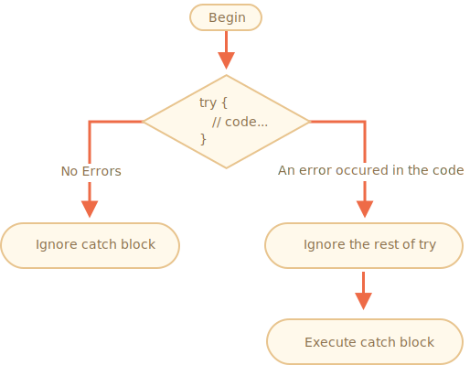

不管你多么精通编程，有时我们的脚本总还是会出现错误。可能是因为我们的编写出错，或是与预期不同的用户输入，或是错误的服务端响应以及其他数千种原因。
通常，如果发生错误，脚本就会“死亡”（立即停止），并在控制台将错误打印出来。
但是有一种语法结构 try..catch，它使我们可以“捕获（catch）”错误，因此脚本可以执行更合理的操作，而不是死掉。
try..catch 结构由两部分组成：try 和 catch：
try {
// 代码...
} catch (err) {
// 错误捕获
}它按照以下步骤执行：
try {...} 中的代码。catch(err)：执行到 try 的末尾并跳过 catch 继续执行。try 执行停止，控制流转向 catch(err) 的开头。变量 err（我们可以使用任何名称）将包含一个 error 对象，该对象包含了所发生事件的详细信息。
所以，try {…} 块内的错误不会杀死脚本 — 我们有机会在 catch 中处理它。
让我们来看一些例子。
没有 error 的例子：显示 alert (1) 和 (2)：
try {
alert('Start of try runs'); // (1) <--
// ...这里没有 error
alert('End of try runs'); // (2) <--
} catch(err) {
alert('Catch is ignored, because there are no errors'); // (3)
}包含 error 的例子：显示 (1) 和 (3) 行的 alert 中的内容：
try {
alert('Start of try runs'); // (1) <--
lalala; // Error，变量未定义！
alert('End of try (never reached)'); // (2)
} catch(err) {
alert(`Error has occurred!`); // (3) <--
}`"try..catch 仅对运行时的 error 有效"
要使得 try..catch 能工作，代码必须是可执行的。换句话说，它必须是有效的 JavaScript 代码。
如果代码包含语法错误，那么 try..catch 将无法正常工作，例如含有不匹配的花括号：
try {
error
} catch(e) {
alert("The engine can't understand this code, it's invalid");
}JavaScript 引擎首先会读取代码，然后运行它。在读取阶段发生的错误被称为“解析时间（parse-time）”错误，并且无法恢复（从该代码内部）。这是因为引擎无法理解该代码。
所以，try..catch 只能处理有效代码中出现的错误。这类错误被称为“运行时的错误（runtime errors）”，有时被称为“异常（exceptions）”。
`"`try..catch` 同步工作"
如果在“计划的（scheduled）”代码中发生异常，例如在 `setTimeout` 中，则 `try..catch` 不会捕获到异常：
```js
try {
setTimeout(function() {
noSuchVariable; // 脚本将在这里停止运行
}, 1000);
} catch (e) {
alert( "won't work" );
}
```
因为 `try..catch` 包裹了计划要执行的函数，该函数本身要稍后才执行，这时引擎已经离开了 `try..catch` 结构。
为了捕获到计划的（scheduled）函数中的异常，那么 `try..catch` 必须在这个函数内：
```js
setTimeout(function() {
try {
noSuchVariable; // try..catch 处理 error 了！
} catch {
alert( "error is caught here!" );
}
}, 1000);
```发生错误时，JavaScript 生成一个包含有关其详细信息的对象。然后将该对象作为参数传递给 catch：
try {
// ...
} catch(err) { // <-- “error 对象”，也可以用其他参数名代替 err
// ...
}对于所有内建的 error，error 对象具有两个主要属性：
name
: Error 名称。例如，对于一个未定义的变量，名称是 "ReferenceError"。
message
: 关于 error 的详细文字描述。
还有其他非标准的属性在大多数环境中可用。其中被最广泛使用和支持的是：
stack
: 当前的调用栈：用于调试目的的一个字符串，其中包含有关导致 error 的嵌套调用序列的信息。
例如：
try {
lalala; // error, variable is not defined!
} catch(err) {
alert(err.name); // ReferenceError
alert(err.message); // lalala is not defined
alert(err.stack); // ReferenceError: lalala is not defined at (...call stack)
// 也可以将一个 error 作为整体显示出来as a whole
// Error 信息被转换为像 "name: message" 这样的字符串
alert(err); // ReferenceError: lalala is not defined
}[recent browser=new]
如果我们不需要 error 的详细信息，catch 也可以忽略它：
try {
// ...
} catch { // <-- 没有 (err)
// ...
}让我们一起探究一下真实场景中 try..catch 的用例。
正如我们所知道的，JavaScript 支持 JSON.parse(str) 方法来解析 JSON 编码的值。
通常，它被用来解析从网络，从服务器或是从其他来源接收到的数据。
我们收到数据后，然后像下面这样调用 JSON.parse：
let json = '{"name":"John", "age": 30}'; // 来自服务器的数据
let user = JSON.parse(json); // 将文本表示转换成 JS 对象
// 现在 user 是一个解析自 json 字符串的有自己属性的对象
alert( user.name ); // John
alert( user.age ); // 30你可以在 info:json 一章中找到更多关于 JSON 的详细内容。
如果 json 格式错误，JSON.parse 就会生成一个 error，因此脚本就会“死亡”。
我们对此满意吗？当然不！
如果这样做，当拿到的数据出了问题，那么访问者永远都不会知道原因（除非他们打开开发者控制台）。代码执行失败却没有提示信息，这真的是很糟糕的用户体验。
让我们用 try..catch 来处理这个 error：
let json = "{ bad json }";
try {
let user = JSON.parse(json); // <-- 当出现一个 error 时...
alert( user.name ); // 不工作
} catch (e) {
// ...执行会跳转到这里并继续执行
alert( "Our apologies, the data has errors, we'll try to request it one more time." );
alert( e.name );
alert( e.message );
}在这儿，我们将 catch 块仅仅用于显示信息，但是我们可以做更多的事儿：发送一个新的网络请求，向访问者建议一个替代方案，将有关错误的信息发送给记录日志的设备，……。所有这些都比代码“死掉”好得多。
如果这个 json 在语法上是正确的，但是没有所必须的 name 属性该怎么办？
像这样：
let json = '{ "age": 30 }'; // 不完整的数据
try {
let user = JSON.parse(json); // <-- 没有 error
alert( user.name ); // 没有 name！
} catch (e) {
alert( "doesn't execute" );
}这里 JSON.parse 正常执行，但是缺少 name 属性对我们来说确实是个 error。
为了统一进行 error 处理，我们将使用 throw 操作符。
throw 操作符会生成一个 error 对象。
语法如下：
throw <error object>技术上讲，我们可以将任何东西用作 error 对象。甚至可以是一个原始类型数据，例如数字或字符串，但最好使用对象，最好使用具有 name 和 message 属性的对象（某种程度上保持与内建 error 的兼容性）。
JavaScript 中有很多内建的标准 error 的构造器：Error，SyntaxError，ReferenceError，TypeError 等。我们也可以使用它们来创建 error 对象。
它们的语法是：
let error = new Error(message);
// 或
let error = new SyntaxError(message);
let error = new ReferenceError(message);
// ...对于内建的 error（不是对于其他任何对象，仅仅是对于 error），name 属性刚好就是构造器的名字。message 则来自于参数（argument）。
例如：
let error = new Error("Things happen o_O");
alert(error.name); // Error
alert(error.message); // Things happen o_O让我们来看看 JSON.parse 会生成什么样的 error：
try {
JSON.parse("{ bad json o_O }");
} catch(e) {
alert(e.name); // SyntaxError
alert(e.message); // Unexpected token b in JSON at position 2
}正如我们所看到的， 那是一个 SyntaxError。
在我们的示例中，缺少 name 属性就是一个 error，因为用户必须有一个 name。
所以，让我们抛出这个 error。
let json = '{ "age": 30 }'; // 不完整的数据
try {
let user = JSON.parse(json); // <-- 没有 error
if (!user.name) {
throw new SyntaxError("Incomplete data: no name"); // (*)
}
alert( user.name );
} catch(e) {
alert( "JSON Error: " + e.message ); // JSON Error: Incomplete data: no name
}在 (*) 标记的这一行，throw 操作符生成了包含着我们所给定的 message 的 SyntaxError，与 JavaScript 自己生成的方式相同。try 的执行立即停止，控制流转向 catch 块。
现在，catch 成为了所有 error 处理的唯一场所：对于 JSON.parse 和其他情况都适用。
在上面的例子中，我们使用 try..catch 来处理不正确的数据。但是在 try {...} 块中是否可能发生 另一个预料之外的 error？例如编程错误（未定义变量）或其他错误，而不仅仅是这种“不正确的数据”。
例如：
let json = '{ "age": 30 }'; // 不完整的数据
try {
user = JSON.parse(json); // <-- 忘记在 user 前放置 "let"
// ...
} catch(err) {
alert("JSON Error: " + err); // JSON Error: ReferenceError: user is not defined
// (实际上并没有 JSON Error)
}当然，一切皆有可能！程序员也会犯错。即使是被数百万人使用了几十年的开源项目中 — 也可能突然被发现了一个漏洞，并导致可怕的黑客入侵。
在我们的例子中，try..catch 旨在捕获“数据不正确”的 error。但是实际上，catch 会捕获到 所有 来自于 try 的 error。在这儿，它捕获到了一个预料之外的 error，但是仍然抛出的是同样的 "JSON Error" 信息。这是不正确的，并且也会使代码变得更难以调试。
为了避免此类问题，我们可以采用“重新抛出”技术。规则很简单：
catch 应该只处理它知道的 error，并“抛出”所有其他 error。
“再次抛出（rethrowing）”技术可以被更详细地解释为：
catch(err) {...} 块中，我们对 error 对象 err 进行分析。throw err。通常，我们可以使用 instanceof 操作符判断错误类型：
try {
user = { /*...*/ };
} catch(err) {
if (err instanceof ReferenceError) {
alert('ReferenceError'); // 访问一个未定义（undefined）的变量产生了 "ReferenceError"
}
}我们还可以从 err.name 属性中获取错误的类名。所有原生的错误都有这个属性。另一种方式是读取 err.constructor.name。
在下面的代码中，我们使用“再次抛出”，以达到在 catch 中只处理 SyntaxError 的目的：
let json = '{ "age": 30 }'; // 不完整的数据
try {
let user = JSON.parse(json);
if (!user.name) {
throw new SyntaxError("Incomplete data: no name");
}
blabla(); // 预料之外的 error
alert( user.name );
} catch(e) {
if (e instanceof SyntaxError) {
alert( "JSON Error: " + e.message );
} else {
throw e; // 再次抛出 (*)
}
}如果 (*) 标记的这行 catch 块中的 error 从 try..catch 中“掉了出来”，那么它也可以被外部的 try..catch 结构（如果存在）捕获到，如果外部不存在这种结构，那么脚本就会被杀死。
所以，catch 块实际上只处理它知道该如何处理的 error，并“跳过”所有其他的 error。
下面这个示例演示了这种类型的 error 是如何被另外一级 try..catch 捕获的：
function readData() {
let json = '{ "age": 30 }';
try {
// ...
blabla(); // error!
} catch (e) {
// ...
if (!(e instanceof SyntaxError)) {
throw e; // 再次抛出（不知道如何处理它）
}
}
}
try {
readData();
} catch (e) {
alert( "External catch got: " + e ); // 捕获了它！
}上面这个例子中的 readData 只知道如何处理 SyntaxError，而外部的 try..catch 知道如何处理任意的 error。
等一下，以上并不是所有内容。
try..catch 结构可能还有一个代码子句（clause）：finally。
如果它存在，它在所有情况下都会被执行：
try 之后，如果没有 error，catch 之后，如果没有 error。该扩展语法如下所示：
try {
... 尝试执行的代码 ...
} catch(e) {
... 处理 error ...
} finally {
... 总是会执行的代码 ...
}试试运行这段代码：
try {
alert( 'try' );
if (confirm('Make an error?')) BAD_CODE();
} catch (e) {
alert( 'catch' );
} finally {
alert( 'finally' );
}这段代码有两种执行方式：
try -> catch -> finally。try -> finally。finally 子句（clause）通常用在：当我们开始做某事的时候，希望无论出现什么情况都要完成完成某个任务。
例如，我们想要测量一个斐波那契数字函数 fib(n) 执行所需要花费的时间。通常，我们可以在运行它之前开始测量，并在运行完成时结束测量。但是，如果在该函数调用期间出现 error 该怎么办？特别是，下面这段 fib(n) 的实现代码在遇到负数或非整数数字时会返回一个 error。
无论如何，finally 子句都是一个结束测量的好地方。
在这儿，finally 能够保证在两种情况下都能正确地测量时间 — 成功执行 fib 以及 fib 中出现 error 时：
let num = +prompt("Enter a positive integer number?", 35)
let diff, result;
function fib(n) {
if (n < 0 || Math.trunc(n) != n) {
throw new Error("Must not be negative, and also an integer.");
}
return n <= 1 ? n : fib(n - 1) + fib(n - 2);
}
let start = Date.now();
try {
result = fib(num);
} catch (e) {
result = 0;
} finally {
diff = Date.now() - start;
}
alert(result || "error occurred");
alert( `execution took ${diff}ms` );你可以通过运行上面这段代码并在 prompt 弹窗中输入 35 来进行检查 — 代码运行正常，先执行 try 然后是 finally。如果你输入的是 -1 — 将立即出现 error，执行将只花费 0ms。以上两种情况下的时间测量都正确地完成了。
换句话说，函数 fib 以 return 还是 throw 完成都无关紧要。在这两种情况下都会执行 finally 子句。
```smart header="变量和 try..catch..finally 中的局部变量"
请注意，上面代码中的 result 和 diff 变量都是在 try..catch 之前 声明的。
否则，如果我们使用 let 在 try 块中声明变量，那么该变量将只在 try 块中可见。
````smart header="`finally` 和 `return`"
`finally` 子句适用于 `try..catch` 的 **任何** 出口。这包括显式的 `return`。
在下面这个例子中，在 `try` 中有一个 `return`。在这种情况下，`finally` 会在控制转向外部代码前被执行。
```js
function func() {
try {
return 1;
} catch (e) {
/* ... */
} finally {
alert( 'finally' );
}
}
alert( func() ); // 先执行 finally 中的 alert，然后执行这个 alert
````smart header="`try..finally`"
没有 `catch` 子句的 `try..finally` 结构也很有用。当我们不想在这儿处理 error（让它们 fall through），但是需要确保我们启动的处理需要被完成。
```js
function func() {
// 开始执行需要被完成的操作（比如测量）
try {
// ...
} finally {
// 完成前面我们需要完成的那件事儿，即使 try 中的执行失败了
}
}
```
上面的代码中，由于没有 `catch`，所以 `try` 中的 error 总是会使代码执行跳转至函数 `func()` 外。但是，在跳出之前需要执行 `finally` 中的代码。这个部分的内容并不是 JavaScript 核心的一部分。设想一下，在 try..catch 结构外有一个致命的 error，然后脚本死亡了。这个 error 就像编程错误或其他可怕的事儿那样。
有什么办法可以用来应对这种情况吗？我们可能想要记录这个 error，并向用户显示某些内容（通常用户看不到错误信息）等。
规范中没有相关内容，但是代码的执行环境一般会提供这种机制，因为它确实很有用。例如，Node.JS 有 process.on("uncaughtException")。在浏览器中，我们可以将将一个函数赋值给特殊的 window.onerror 属性，该函数将在发生未捕获的 error 时执行。
语法如下：
window.onerror = function(message, url, line, col, error) {
// ...
};message
: Error 信息。
url
: 发生 error 的脚本的 URL。
line，col
: 发生 error 处的代码的行号和列号。
error
: Error 对象。
例如：
<script>
window.onerror = function(message, url, line, col, error) {
alert(`${message}\n At ${line}:${col} of ${url}`);
};
function readData() {
badFunc(); // 啊，出问题了！
}
readData();
</script>全局错误处理程序 window.onerror 的作用通常不是恢复脚本的执行 — 如果发生编程错误，那这几乎是不可能的，它的作用是将错误信息发送给开发者。
也有针对这种情况提供错误日志的 Web 服务，例如 https://errorception.com 或 http://www.muscula.com。
它们会像这样运行：
window.onerror 函数。try..catch 结构允许我们处理执行过程中出现的 error。从字面上看，它允许“尝试”运行代码并“捕获”其中可能发生的错误。
语法如下：
try {
// 执行此处代码
} catch(err) {
// 如果发生错误，跳转至此处
// err 是一个 error 对象
} finally {
// 无论怎样都会在 try/catch 之后执行
}这儿可能会没有 catch 部分或者没有 finally，所以 try..catch 或 try..finally 都是可用的。
Error 对象包含下列属性：
message — 人类可读的 error 信息。name — 具有 error 名称的字符串（Error 构造器的名称）。stack（没有标准，但得到了很好的支持）— Error 发生时的调用栈。如果我们不需要 error 对象，我们可以通过使用 catch { 而不是 catch(err) { 来省略它。
我们也可以使用 throw 操作符来生成自定义的 error。从技术上讲，throw 的参数可以是任何东西，但通常是继承自内建的 Error 类的 error 对象。下一章我们会详细介绍扩展 error。
再次抛出（rethrowing）是一种错误处理的重要模式：catch 块通常期望并知道如何处理特定的 error 类型，因此它应该再次抛出它不知道的 error。
即使我们没有 try..catch，大多数执行环境也允许我们设置“全局”错误处理程序来捕获“掉出（fall out）”的 error。在浏览器中，就是 window.onerror。